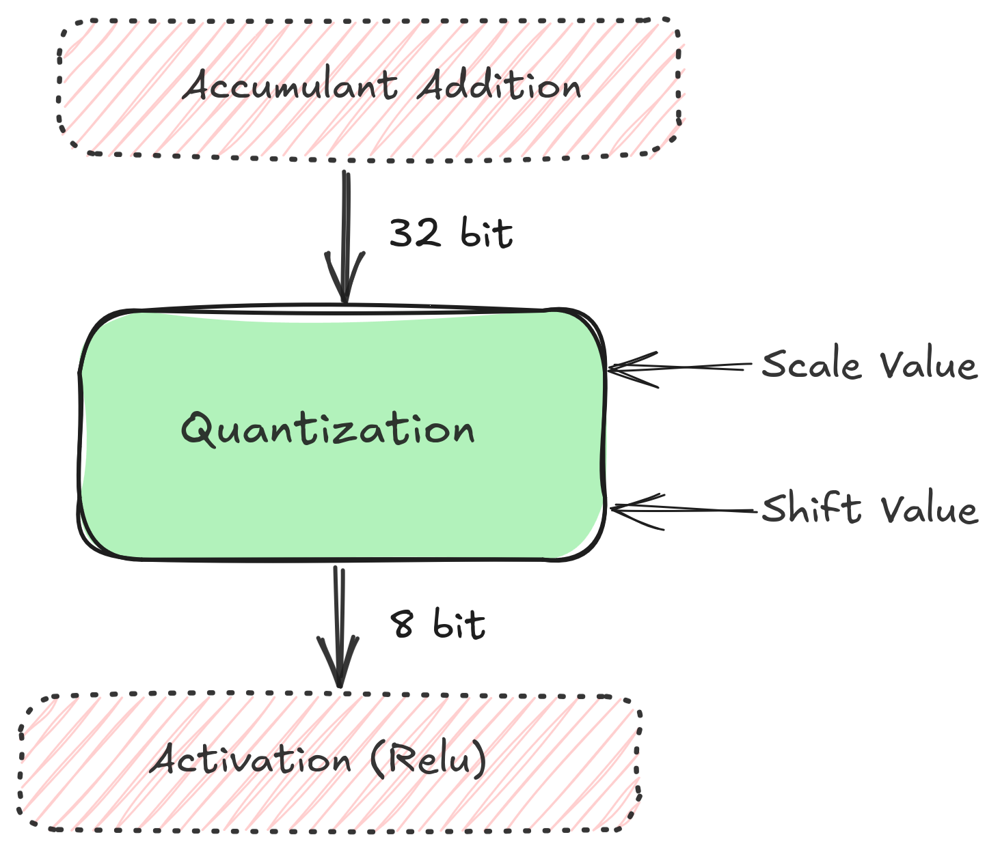

A Deeper Look Into Quantization¶
Quantization is a techinique of re-encoding information, albeit in a smaller bit-width. It substantially reduces the size and bandwidth requirements of a NN model by ~4x. As floating point operations are expensive in general, it is desirable to have integers, especially 8bit integers that encode the same information as their traditional Float32 counterparts. As it turns out, neural networks are resilient to minor turbulence in activations and give similar accuracies in smaller bit-widths as they would with greater range of precision. The only decidable variable here then is how we quantize our numbers.
{kind=link}

To quantize a Float32 number x, we need to scale it down to what Int8
can fit. This is achieved by calculating a scale variable. The scale
can be calculated thusly:
Where, \(\beta\) and \(\alpha\) are the upper and lower limits of source bit-field—in our case, Float32. \(b\) is the number of bits in the destination bit-field, which is 8 for Int8.
Equation (1) now becomes:
Now, the quantization function can be defined as:
\(round\) is a round-to-nearest function, and \(clip\) clamps its inputs between -127 and 127. Rounding can affect quantization, this can be explored further (See Section 3, [GAGN15]).
Similarly, the de-quantize function becomes:
What remains now is calculating \(s\), which in-turn requires \(\beta\) and \(\alpha\). This is explained in the following sections.
Heuristics for scale selection¶
From the previous sections, \(\alpha\) and \(\beta\) need not be approximated from the entire Float32 space, as activations and weights tend not to encompass the entire Float32 space, as demostrated by this plot:
Therefore, the min and max values need to be ascertained dynamically from the set of values that we have at hand.
The granularity at which this is done is described. [WJZ+20], recommends the following:
Use symmetric per-channel scale quantization for weights
Use per-tensor scale quantization for activations/inputs.
Here, per-channel and per-tensor imply the granularity of quantization. Former means that each channel (in a n-channel convolution) has a unique scale value and the latter, each tensor (made of many channels) has one unique scale value. Intuitively, per-tensor is coarser than per-channel granularity.
Efficiency Concerns¶
Calculating max and min values dynamically is computationally expensive. They need to be computed statically or offline. For weigths, this is straightforward, as they are computed once during trained and used statically during inference. Moreover, we know a-priori, what their values will be.
For activations/inputs, for which, the min-max values can be anything, there is a need for approximation through calibration. Calibration is the techinique of taking a sample dataset, and calculating scale values for it. These new-found scale values are fixed just like the weights of neural networks when they are deployed.
To improve the efficiency further, instead of defering scale-compute to compile time from runtime, we can take it further and compute scale-values for popular datasets in advance and store them at a server or distribute along with other fixed-parameter files.
Relative Entropy¶
Quantization is re-encoding of information. The ideal scale-values have the least loss of informationwhen converting from one size to other. A metric to measure loss of information is Relative Entropy or KL Divergence.
KL Divergence measures how one probability distribution is differnce from a second, reference distribution. It is describes as such:
Here, \(N\) is the total number of quantized distributions. \(P\) is Int8 distribution (or expected probabilities) and \(Q\) is the reference probabilities i.e. the Float32 space.
The Algorithm:
For each Layer (per-tensor):
Collect histograms of activations.
Generate many quantized distributions with different saturation values (min/max)
Pick the scale and min/max value which has minimum \(D_{KL}\).
See [Var17] for a detailed exposition.
Floating Point Multiplication/Division on FPGA¶
The scale value is a floating-point number, ergo, the quantization operation is a multiplication of a floating point number with a Int32 (with dequantization being a float division).

Floating point operations are costly on the FPGA. There is a need for a transformation of the numbers so that a \(Float32 x Int32\) can be approximated to a \(Int32 x Int32\). In other words, float operations need to be converted to cheaper integer based operations such as integer multiplication and bit shifting. An intuition for the idea is in order.
If we were to multiply this with a significantly big integer, its fractional part would become greater. If this is followed by a round operation, what we would have is an integer which encapsulates many digits from the original float. How many depends on the big number that we multiplied it with.
The resulting integer is an encapsulation of our floating point number. Multiplying this with the other integer results in an integer via integer multiplication. As we had brought in a multiplication (of the big number), we need to reverse this by a following division with the same big number. Whatever is the result now, is our approximated \(Float32 x Int32\) operation carried out via a \(Int32 x Int32\).
Formally, Consider a float \(X_e\) (\(e\) stands for \(exact\)) multiplied with an integer \(I\).
\(P\) can also be written as:
Here, \(B\) is a big integer (preferably a power of 2, for eg, \(2^{16}\)). \(X_e * B\) is the fixed multiplied \(FM\). Intuitively, \(FM\) can be understood as new scaling value in our integer world.
To cut the chase short, perform \(FM = X_e * B\) on CPU, send (\(FM\), \(B\)) to the FPGA. On the FPGA, perform \(FM * I\) as a \(Int32xInt32\) operation, followed by a right shift of \(2^B\) to reverse the multiplication.
The value of B impacts the precision of the final result.